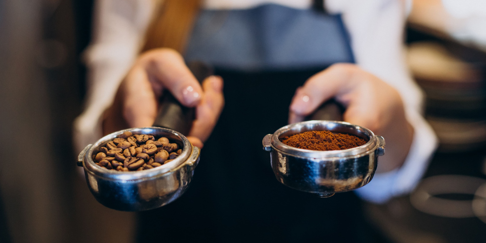

"Bienvenido a Café Pop, en el corazón de Buenos Aires. Ofrecemos una amplia variedad de cafés, desde clásicos hasta creaciones innovadoras, elaborados con granos de calidad de todo el mundo. Nuestro acogedor ambiente es perfecto para disfrutar de café, bocadillos y postres artesanales mientras te relajas o trabajas. Únete a nosotros para una experiencia única donde el café es la estrella. ¡Te esperamos en Café Pop!"